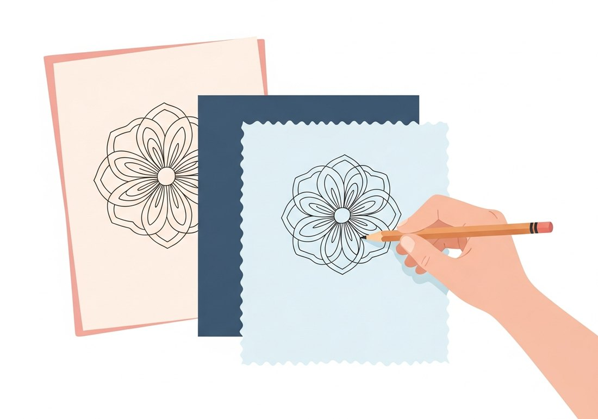
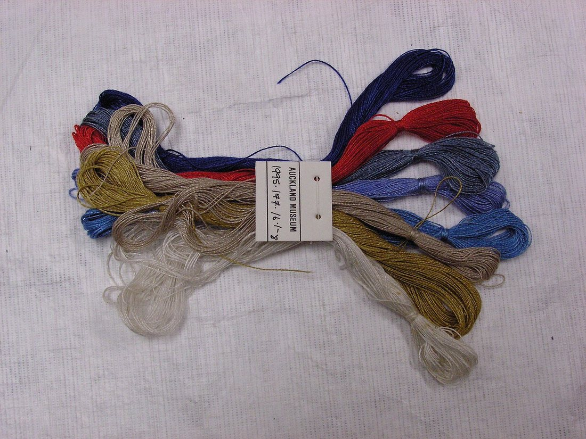
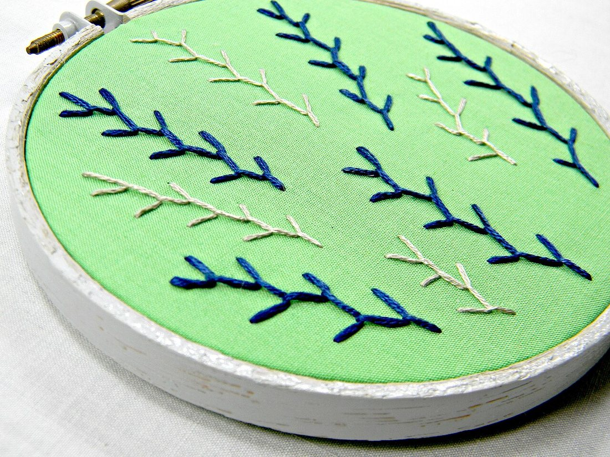
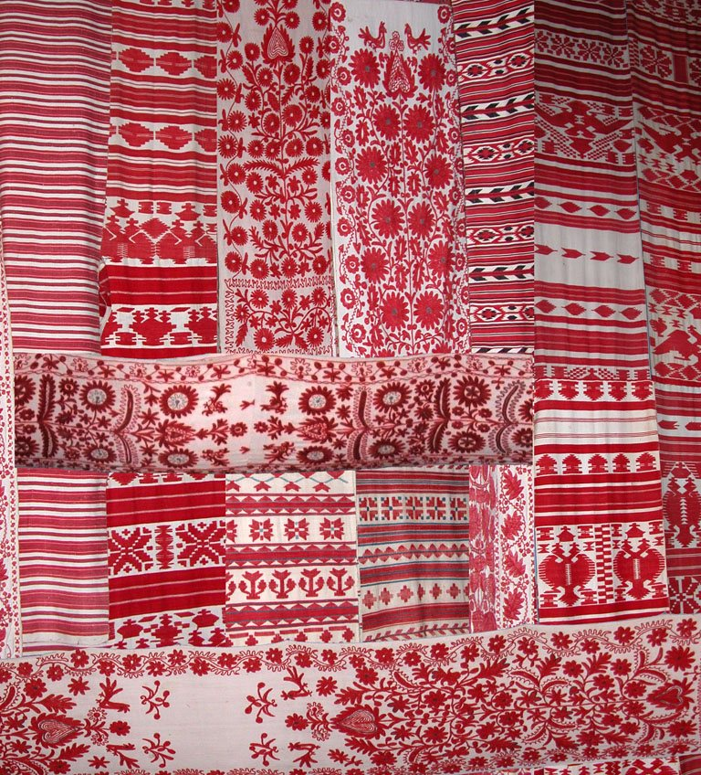
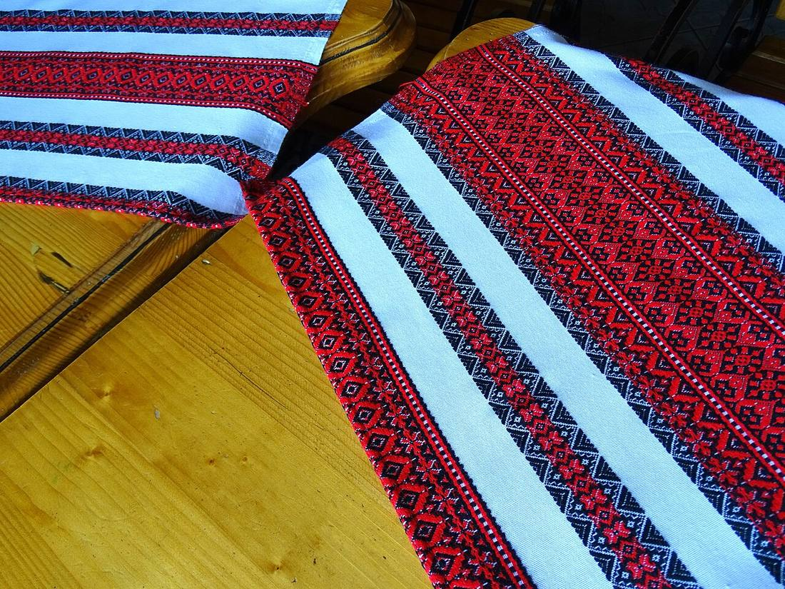
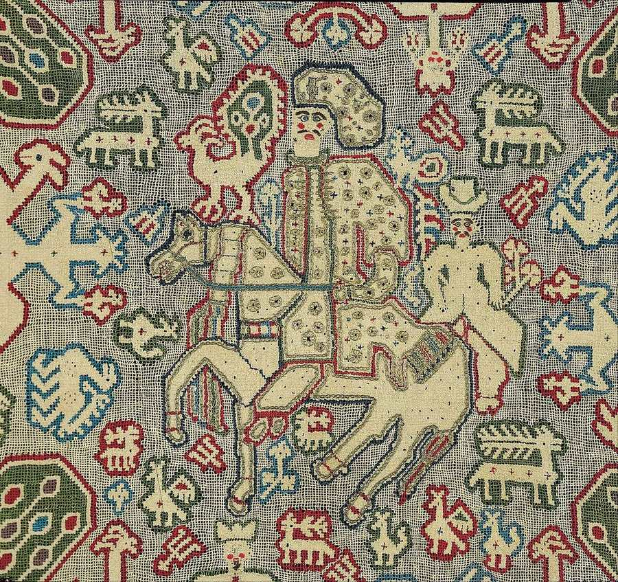
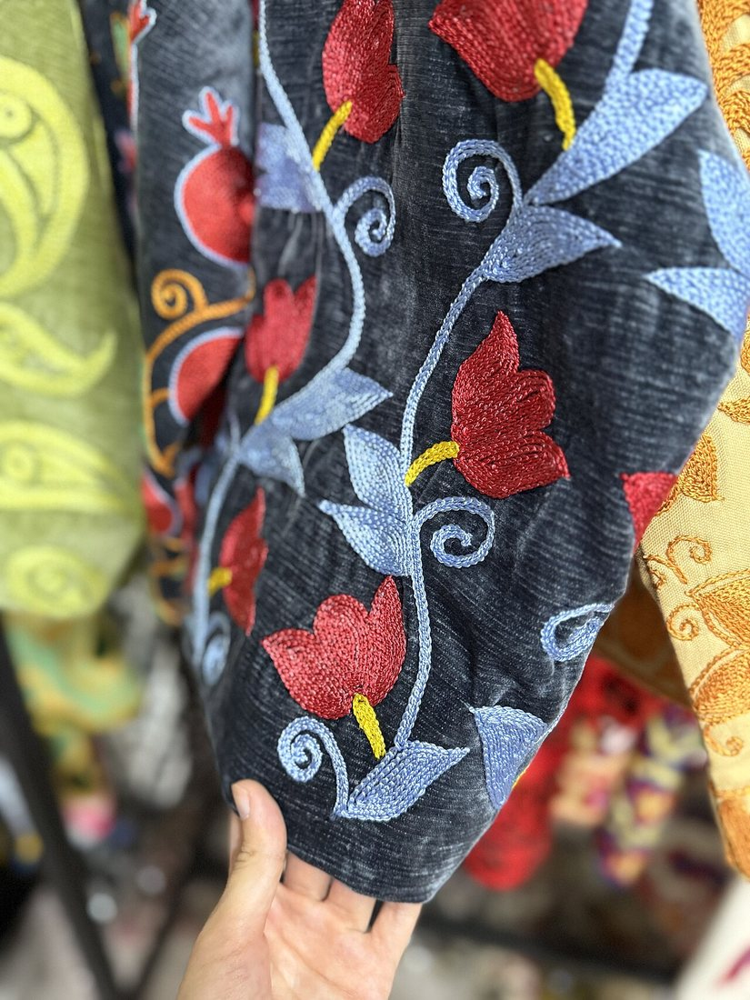
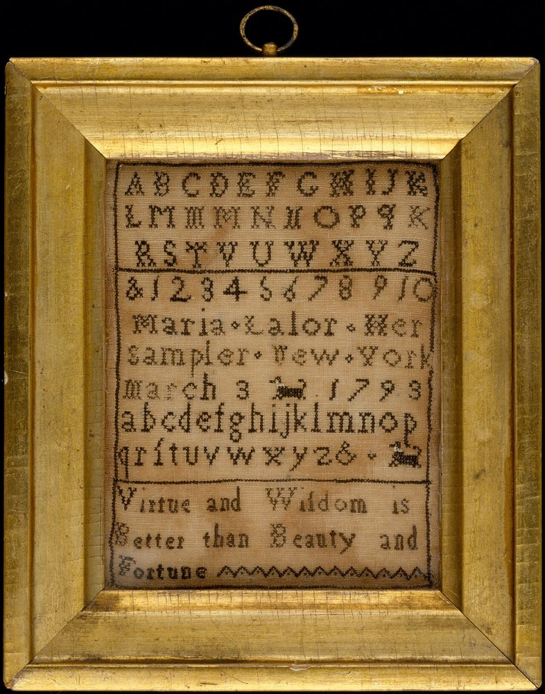

Көркем еңбек · 2-бөлім · Сәндік-қолданбалы өнер Art & Craft · Section 2 · Decorative & Applied Art Художественный труд · Раздел 2 · Декоративно-прикладное искусство
🧵 Кесте: эскиз және бұйымды әрлеу
🧵 Embroidery: Sketch & Decorating an Item
🧵 Вышивка: эскиз и декорирование изделия
Идеядан дайын бұйымға дейін: эскиз сызудан соңғы үтіктеуге дейінгі жол. From idea to finished item: the path from drawing a sketch to the final pressing. От идеи к готовому изделию: путь от эскиза до финальной утюжки.
Кесте (вышивка) — матаны ине мен түрлі-түсті жіппен өрнектеп әрлейтін қол өнері. Бұйымды бірден тігуге кіріспейміз: алдымен эскиз саламыз — болашақ өрнектің қарындашпен сызылған дайын жобасы. Эскизде өрнектің пішіні, орналасуы және түс реңктері алдын ала шешіледі. Сосын сурет матаға көшіріліп, тек содан кейін ғана кесте тігіледі. Осылай декорлау (әрлеу) — қарапайым орамал, жастық немесе көйлекті бірегей, әсем бұйымға айналдыру. Embroidery is a handicraft that decorates fabric with a needle and coloured threads. We never start stitching straight away: first we make a sketch — a finished pencil plan of the future pattern. The sketch decides in advance the shape of the ornament, where it sits and its colour scheme. Then the drawing is copied onto the cloth, and only after that the embroidery is stitched. This is how decorating turns a plain towel, cushion or dress into a unique, beautiful item. Вышивка — это ручное рукоделие, которое украшает ткань иглой и цветными нитями. Мы не начинаем шить сразу: сначала делаем эскиз — законченный карандашный проект будущего узора. В эскизе заранее решаются форма орнамента, его расположение и цветовое сочетание. Затем рисунок переносят на ткань, и только после этого выполняют вышивку. Так декорирование превращает простое полотенце, подушку или платье в неповторимое, красивое изделие.
Бұл — қағаздағы дайындық сурет: өрнектің құрамы, өлшемі, түсі алдын ала ойластырылады. Эскиз қателерден сақтайды: матаны бүлдірмес бұрын барлығын қағазда тексереміз. This is a preparatory drawing on paper: the composition, size and colour of the pattern are thought through in advance. A sketch protects you from mistakes — you check everything on paper before touching the cloth. Это подготовительный рисунок на бумаге: заранее продумываются состав, размер и цвет узора. Эскиз бережёт от ошибок: всё проверяем на бумаге, прежде чем испортить ткань.
Бұл — дайын бұйымды (орамал, жастық, тақия, көйлек) өрнекпен сәндеу. Өрнек бұйымның түріне, қызметіне және пішініне сай таңдалады — сонда ол үйлесімді көрінеді. This is decorating a finished item (a towel, cushion, skullcap, dress) with a pattern. The ornament is chosen to suit the item's kind, purpose and shape — so it looks harmonious. Это украшение готового изделия (полотенца, подушки, тюбетейки, платья) узором. Орнамент подбирают под вид, назначение и форму изделия — тогда он смотрится гармонично.
Жұмыс реті: 6 қадам The Workflow: 6 Steps Порядок работы: 6 шагов
Идеядан дайын, үтіктелген бұйымға дейін. From the idea to a finished, pressed item. От идеи до готового, отутюженного изделия.
Бұйымды және өрнек орнын таңдауChoose the item and where the pattern goesВыбор изделия и места узора
Нені әрлейтінімізді шешеміз: орамал, жастықша, тақия, көйлек жеңі немесе майлық. Өрнек қай жерде тұратынын белгілейміз — жиекте, бұрышта немесе ортада. Орын бұйымның пайдасына кедергі болмауы керек.We decide what to decorate: a towel, cushion, skullcap, sleeve or napkin. We mark where the pattern will sit — on the border, in a corner or in the centre. The placement must not get in the way of how the item is used.Решаем, что украшаем: полотенце, подушку, тюбетейку, рукав или салфетку. Намечаем, где будет узор — по кайме, в углу или по центру. Расположение не должно мешать использованию изделия.
Қағазда өрнек эскизіSketch the ornament on paperЭскиз орнамента на бумаге
Қарындашпен өрнекті нақты өлшемде саламыз. Мотивтерді жинақтап, ырғақ пен симметрияны тексереміз, түстерді белгілейміз. Бір эскизде бірнеше нұсқаны салып, ең үйлесімдісін таңдауға болады.We draw the pattern in pencil at its real size. We arrange the motifs, check the rhythm and symmetry and mark the colours. You can draw several versions on one sheet and pick the most harmonious one.Карандашом рисуем узор в натуральную величину. Компонуем мотивы, проверяем ритм и симметрию, помечаем цвета. Можно нарисовать несколько вариантов и выбрать самый гармоничный.
Суретті матаға көшіруTransfer the drawing onto fabricПеревод рисунка на ткань
Эскизді матаға көшіреміз. Жиі көшірме қағаз (копирка) қолданылады: қағаз — копирка — мата деп қаттаймыз да, өрнекті қарындашпен сызып, ізін матаға түсіреміз. Жарыққа қарап көшіру немесе торкөзбен есептеу әдістері де бар.We copy the sketch onto the cloth. Carbon (transfer) paper is often used: we stack paper – carbon – fabric, trace the pattern with a pencil and its outline prints onto the cloth. You can also trace against the light or count it out over a grid.Переносим эскиз на ткань. Часто используют копировальную бумагу (копирку): складываем бумага — копирка — ткань, обводим узор карандашом, и его контур отпечатывается на ткани. Бывает перевод на просвет или расчёт по клеткам.

копирка арқылы көшіруcopying through carbon paperперевод через копирку

түс реңктерін таңдауchoosing the colour paletteподбор палитры цветов
Жіптерді түске қарай таңдауPick threads by colourПодбор ниток по цвету
Эскиздегі түстерге сәйкес мулине жіптерін таңдаймыз. Матамен үйлесімін, контраст пен реңктерін тексереміз. Жіп саны (неше талмен тігу) кестенің қалыңдығын анықтайды. Артық емес, 3–4 түс жиі жеткілікті.We choose floss threads to match the colours in the sketch. We check how they go with the fabric, the contrast and the shades. The number of strands decides how thick the stitching looks. Often 3–4 colours are enough — no need for more.Подбираем нитки мулине под цвета эскиза. Проверяем сочетание с тканью, контраст и оттенки. Число сложений нити задаёт толщину вышивки. Часто достаточно 3–4 цветов — больше не нужно.
Кесте тігуDo the embroideryВышивание
Матаны кергішке (пяльце) керіп, өрнекті тігеміз. Тігістерді біркелкі, тартпай орындаймыз. Кестенің сыртқы беті таза болуы үшін, түйіндерді теріс жағында жасыреміз. Шыдамдылық пен ұқыптылық — басты шарт.We stretch the fabric in a hoop and stitch the pattern. Stitches are kept even and not pulled too tight. To keep the front clean, knots are hidden on the back. Patience and neatness are the main rule.Натягиваем ткань на пяльцы и вышиваем узор. Стежки делаем ровными, не стягивая ткань. Чтобы лицо вышивки было чистым, узелки прячем с изнанки. Терпение и аккуратность — главное условие.

мата кергішке керілгенfabric stretched in a hoopткань натянута на пяльцы
Жуу, үтіктеу және рәсімдеуWash, press and finishСтирка, утюжка и оформление
Дайын кестені жұмсақ жуып, копирка ізін кетіреміз. Сосын теріс жағынан, жұмсақ маталың үстінде үтіктейміз — сонда тігістер жаншылмайды. Соңында бұйымды жиектеп, керек болса жақтауға саламыз немесе тігіп бітіреміз.We gently wash the finished work to remove the carbon marks. Then we iron it from the back over a soft cloth, so the stitches are not flattened. Finally we hem the item, frame it if needed, or sew it together.Готовую вышивку аккуратно стираем, убирая следы копирки. Затем гладим с изнанки через мягкую ткань, чтобы не примять стежки. В конце изделие подшиваем, при необходимости оформляем в рамку или сшиваем.
Әрленген бұйымдар галереясы Gallery of Decorated Items Галерея декорированных изделий
🔍 Толық көру үшін суретті басыңыз. 🔍 Tap a photo to view it in full. 🔍 Нажмите на фото, чтобы рассмотреть.

Жиекке таспалы өрнек тігілген сәндік орамал — қонақ күту мен мерекенің белгісі.A decorative towel with a border pattern along the edge — a sign of hospitality and celebration.Декоративное полотенце с ленточным узором по краю — знак гостеприимства и праздника.

Айқыш тігіспен жасалған геометриялық таспалар үстелді әрлейді.Geometric strips worked in cross-stitch decorate the table.Геометрические полосы, выполненные крестом, украшают стол.

Бүкіл бетін толтыратын торлы өрнек: салт атты, құстар мен жануарлар бейнеленген.An all-over net pattern: a rider, birds and animals are depicted.Сплошной сетчатый узор: изображены всадник, птицы и животные.

Жеңге салынған стильденген қызғалдақтар мен жапырақтар — киімді сәндейді.Stylized tulips and leaves on the sleeve decorate the clothing.Стилизованные тюльпаны и листья на рукаве украшают одежду.

Тігіс түрлерін жаттығатын үлгі: дайын болғанда жақтауға салынып, қабырғаны әрлейді.A piece for practising stitches: when finished it is framed and decorates the wall.Образец для отработки стежков: готовым его вставляют в рамку и украшают стену.
Аяқталмаған кесте: кергіш матаны тегіс ұстап, тігісті біркелкі етеді.An unfinished piece: the hoop keeps the fabric flat and the stitches even.Незаконченная вышивка: пяльцы держат ткань ровно, и стежки выходят аккуратными.
Негізгі тігіс түрлері Basic Types of Stitch Основные виды швов
✚ Айқыш (крест)Cross-stitchКрест
Торкөз бойынша «×» тігістері. Геометриялық өрнекке ыңғайлы."×" stitches counted over a grid. Good for geometric patterns.Стежки «×» по клеткам. Удобен для геометрических узоров.
➰ Шынжыр (тамбур)Chain stitchТамбурный
Ілмек-ілмектен тізілген желі. Иілген сызық пен контурға жақсы.A line of linked loops. Great for curves and outlines.Цепочка из петелек. Хорош для плавных линий и контуров.
▦ ГладьSatin stitchГладь
Тегіс, жанасқан тігістер бетті толтырады. Гүл, жапыраққа ыңғайлы.Smooth, side-by-side stitches fill a shape. Good for flowers and leaves.Ровные смежные стежки заполняют форму. Подходит для цветов, листьев.
┊ Артқы ине (стебель)Back / stem stitchСтебельчатый
Тұтас, мығым сызық. Сабақ пен жіңішке контурға арналған.A solid, firm line. For stems and thin outlines.Сплошная плотная линия. Для стеблей и тонких контуров.
Кеңестер мен ережелер Tips & Rules Советы и правила
📐 Алдымен эскизSketch firstСначала эскиз
Инеге жүгірмес бұрын барлығын қағазда сынап көр: пішінін, өлшемін, түсін.Before reaching for the needle, test it all on paper: shape, size, colour.Прежде чем браться за иглу, проверь всё на бумаге: форму, размер, цвет.
🎨 3–4 түс жеткілікті3–4 colours are enoughДостаточно 3–4 цветов
Аз түс — анық әрі үйлесімді. Көп түс өрнекті шатастырады.Fewer colours look clear and harmonious. Too many confuse the pattern.Меньше цветов — яснее и гармоничнее. Много цветов путают узор.
🧵 Кергішті ұмытпаDon't forget the hoopНе забывай о пяльцах
Керілген мата тігісті тегіс әрі біркелкі етеді, бүрмеленуден сақтайды.A stretched fabric keeps stitches flat and even and prevents puckering.Натянутая ткань делает стежки ровными и не даёт ей стягиваться.
✂️ Теріс жағы тазаKeep the back tidyИзнанка — аккуратная
Ұзын жіптер мен үлкен түйін тастама — теріс жақ та ұқыпты болсын.Avoid long floats and big knots — the back should be neat too.Не оставляй длинных протяжек и больших узлов — изнанка тоже аккуратна.
🌡️ Теріс жағынан үтіктеIron from the backГладь с изнанки
Кестені теріс жағынан, жұмсақ мата арқылы үтікте — тігіс жаншылмайды.Press from the back through a soft cloth so the stitches aren't flattened.Гладь с изнанки через мягкую ткань, чтобы стежки не примялись.
🪡 ҚауіпсіздікSafetyБезопасность
Ине мен қайшыны арнайы орынға сал, инені ауызға алма, жұмыстан соң сана.Keep needle and scissors in their place, never hold a needle in your mouth, count them after work.Храни иглу и ножницы на месте, не бери иглу в рот, после работы пересчитай.
💬 Қорытынды 💬 In a nutshell 💬 Главное
Әдемі кесте — кездейсоқтық емес, реттің жемісі. Алдымен эскиз ойды қағазға түсіреді, сосын өрнек матаға көшіріліп, дұрыс жіп таңдалады, ұқыпты тігіледі және үтіктеліп рәсімделеді. Осы алты қадамды сақтасаң, қарапайым мата сенің қолыңда бірегей, әрленген бұйымға айналады. Beautiful embroidery is not luck but the result of order. First a sketch puts the idea on paper, then the pattern is transferred to the cloth, the right threads are chosen, it is stitched neatly and finally pressed and finished. Keep these six steps and a plain piece of fabric becomes, in your hands, a unique decorated item. Красивая вышивка — не случайность, а результат порядка. Сначала эскиз переносит замысел на бумагу, затем узор переводят на ткань, подбирают нужные нитки, аккуратно вышивают и в конце утюжат и оформляют. Соблюдай эти шесть шагов — и простая ткань в твоих руках станет неповторимым, декорированным изделием.